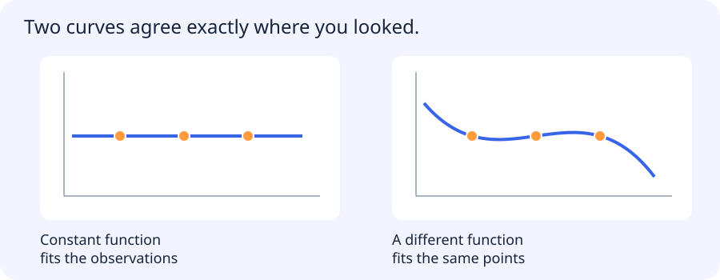

Suppose several functions explain the observations you collected. Their predictions may disagree where you have no data. A probabilistic model specifies how observations and unknown quantities relate, and an inference method uses that specification to update what you know. The examples below make different choices about the kind of quantity being predicted and how uncertainty is represented.
Jump to a concept
Generalized linear models
A GLM combines a linear predictor, a link function and a response distribution from an exponential family. Linear Gaussian regression and logistic Bernoulli regression are familiar examples; Poisson regression models count-like responses under suitable assumptions. Link and distribution are separate choices. A linear predictor does not mean the expected response must be a straight line in raw input space. Overdispersion and zero inflation can invalidate a simple count model.
Use a model for the kind of observation you receive
Consider predicting how many vehicles a camera will detect per minute. An unconstrained straight-line prediction can go below zero. A Poisson model with a log link uses a linear score for the log of the expected count, so exponentiating produces a positive mean. The link describes how features affect that mean. The Poisson assumption describes the distribution of counts around it. They are separate choices.
Compare this with a binary observation such as whether any vehicle appears. Logistic regression maps a linear score into a probability of that event. It answers a different question and can lose useful information about whether there are two vehicles or twenty. Choose the observation and model together. For counts, compare empirical variability with what the Poisson assumption implies. If rush-hour bursts produce greater variability than expected, the uncertainty under that model can be too narrow even if the mean is useful.
Self-check
A Poisson regression predicts log expected count as a linear score s. How do you recover the expected count?
- A. exp(s)
- B. s² for every model
- C. log(s)
- D. 1/s
Show answer and explanation
A. exp(s)
The log link relates the log of the mean to the score, so exponentiation maps the score back to a positive mean.
Gaussian processes
A Gaussian process defines a distribution over functions through a mean and covariance kernel. Finite collections of function values have a joint Gaussian distribution. In regression, conditioning on observed inputs/targets yields a predictive mean and uncertainty under the chosen kernel/noise model. Kernel length scale encodes smoothness and relevance assumptions. Standard exact inference can require cubic-time matrix factorization and quadratic storage in observation count; sparse/approximate methods change this tradeoff. A narrow posterior from a misspecified kernel is not a universal guarantee of confidence.
What a model assumes between observations
Three observations can be consistent with more than one function. The figure shows two functions that pass through the same points but behave differently elsewhere. Fitting those points alone does not choose how the prediction should continue.

A prior or covariance kernel expresses preferences over the unobserved behaviour. Predictive uncertainty is then conditional on those assumptions as well as the observations. This is a useful way to approach probabilistic models: ask what distribution they describe and which dependencies they assume.
The following survey introduces several ways to express those choices and perform inference under them.
Graphical models
Probabilistic graphical models express a joint distribution through factorization and conditional-independence structure. A directed graph can represent a Bayesian network; an undirected factorization can represent a Markov random field. A conditional random field models structured outputs given inputs, useful for sequence labeling or spatial dependencies. An edge in a statistical model does not automatically establish a causal relationship. Inference computes marginals, conditionals or likely configurations, while learning estimates parameters or structure.
MCMC and approximate inference
When a posterior is hard to normalize or integrate, Monte Carlo methods approximate expectations from samples. Markov chain Monte Carlo constructs dependent samples whose stationary distribution is the target under appropriate conditions. Burn-in, mixing, autocorrelation, multiple chains and effective sample size matter. A long chain stuck in one region is not equivalent to many independent posterior samples. Convergence diagnostics can identify some problems but cannot prove every aspect of inference is correct.
Why keeping many draws can still give little new evidence
Suppose a posterior puts weight on two plausible explanations for a collection of observations. A sampling algorithm starts near one and proposes nearby parameter values. Many consecutive draws can look almost identical. If the chain rarely moves to the other region, a histogram of those draws can miss an important part of the posterior even when it contains thousands of samples.
Multiple chains started in different places, traces over time and an estimate of effective sample size can help diagnose the problem. The practical idea is that correlated draws contain less independent information than their count suggests. Before trusting uncertainty from approximate inference, ask which regions were explored and whether the diagnostic is sensitive to the failure you care about.
Self-check
A chain has many draws but stays near only one of two plausible posterior regions. Which conclusion is warranted?
- A. The chain's draws are independent
- B. The posterior is necessarily unimodal
- C. The large sample count proves convergence
- D. The draws may poorly represent the full posterior
Show answer and explanation
D. The draws may poorly represent the full posterior
Repeated samples from one region leave the other region unexplored. Raw sample count does not measure independent coverage.
Topic modeling and latent factors
A topic model represents documents using latent themes and themes using word distributions. LDA uses a mixture-style probabilistic construction with priors over topic proportions and topic-word probabilities. Topics are statistical patterns, not guaranteed human concepts. Stop-word handling, vocabulary and document length influence results. Matrix factorization provides another latent-factor perspective and appears in recommendation and dimensionality reduction. Interpret a factor by inspecting representative examples and stability under data changes.
Reinforcement and evolutionary learning
Reinforcement learning models states, actions, transitions, rewards and often a discount factor. A policy chooses actions; a value estimates expected future return. Exploration changes what data is collected, and off-policy evaluation requires assumptions beyond ordinary supervised random splits. A reward proxy can be optimized while failing the actual user goal. This program retains the idea as a survey; it does not require building a control agent.
Genetic/evolutionary algorithms maintain candidate solutions and use selection, variation and evaluation to search a space. They can work when differentiable gradients are unavailable, but evaluation may be expensive and population search can overfit a reused benchmark. Fitness design, mutation/crossover and stopping conditions define the experiment. They are not guaranteed to find a global optimum.
Appropriate depth
These topics come from the legacy broad-reading checklist and are extensions beyond the current project core. For each, be able to state the problem it solves, its main assumptions, one computation or inference idea and a failure case. A learner taking a role-specific extension can deepen the selected section with the mentor. Do not claim these paragraphs replace a full specialist course; they keep the previously named subjects visible and give a self-contained starting explanation.